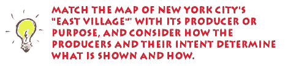

This is an archived copy of History Matters, provided by the Roy Rosenzweig Center for History and New Media. To explore this content in a new interface, visit Who Built America?.

 |
Using an analogy from writing, to fully understand historical prose, you need to know about the author: his/her background, motivations, and when and where the author wrote. This information is essential in order to place the writing within a proper historical context. Similarly one needs to place maps in their proper spatial and chronological contexts to fully appreciate their meaning. This information can shed more light on a map's historical context. All these elements may not be present on every map but knowing information about several of them will make it much easier to fit the map into geographical and historical niches. Author/Publisher -- Knowing who created the map may offer hints as to the map's bias or biases. Does this person or organization have a vested interest in how the map is perceived by the map reader? For example, "town plats," maps created by western promoters, were aimed at attracting prospective settlers. Often they were purely propaganda. Place of Publication -- In what country or city was the map published? What language(s) does the map employ? This could provide insights into potential nationalistic biases. Date -- When the map was constructed helps to place the map in its chronological context. Does the map reflect true facts? Post-1990 maps of Europe should show one Germany, not two. Audience -- Who was the intended audience? What message did the mapmaker want to send? Why was the map produced? Source of Data -- If the map uses secondary data sources, such as census material, knowing the source of the data will help in assessing the appropriateness of the data and thereby the map. Origin -- Was the map drawn? printed in limited numbers? mass-produced? This is often related to the date the map was initially created. Context -- How does the map fit with earlier and later maps? How does the map reflect new discoveries? Using these tools to assess a map will assist in assessing its relevance as an image of a particular point in time. Just as historians cannot record every minute detail of an event, cartographers cannot show all aspects of a place. In the case of maps, more details about the world are omitted as the map's scale becomes smaller. This process, called map simplification, is part of a larger process of cartographic generalization. During the simplification process the cartographer has to reduce details. For example, the Mississippi River is a meandering stream. To fit the Mississippi on a map in a textbook only a few of the biggest changes in direction can be shown. In the simplification process most of the meanders are omitted and the result is an image of a relatively straight stream, while in reality the Mississippi is a highly convoluted watercourse. When cartographers opt to emphasize a single theme such as population density by census tract or cotton production by county, they omit all other information about the places. What is emphasized and what is omitted is another dimension of the simplification process. In this process a map can be manipulated to create a false impression. Mapmakers can show only the information they want to convey and omit the things they want to obscure. This is a very powerful tool in hands of an unscrupulous or novice mapmaker. When examining a map, always ask: "What is not shown?" 
When you are done, click here for further explanation.
|
|||||||||||||||||||||
 |
||||||||||||||||||||||